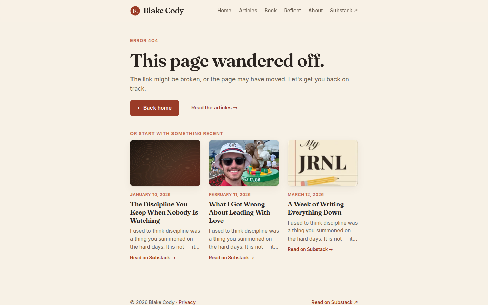

blakecody.com — UI & visual design audit / change log
/404.html
The SEO report's C38 proposed adding the three most recent essays here, reusing postCard() and data-limit="3" so it would populate itself. That is exactly what shipped.
It matters more than its size suggests. A 404 is a person who wanted something specific and did not get it — the most likely moment on the whole site for someone to give up. This page now converts that moment into a reading choice rather than a dead end, and it does it in one screen.
| Element | Text | Size | Ratio |
|---|---|---|---|
.eyebrow | "ERROR 404" | 13.1px | 3.38 |
.section-label | "OR START WITH SOMETHING RECENT" | 13.1px | 3.38 |
.post-meta | each essay date | 12.2px | 3.38 |
This page has 49 words of its own plus three cards, and three of its text styles fail AA. Proportionally it is the worst-affected page on the site — and the "ERROR 404" eyebrow is the first thing a confused visitor looks for to confirm what happened.
Same single cause as everywhere else: --accent-soft #c46a4f used for small text. One token change closes this page along with articles, book, reflect and about.
.post-more bottoms: 771, 771, 747 24px ragged
The same top-aligned card contents as the homepage and the archive, so the same 24px step whenever one title wraps to fewer lines. More visible here than elsewhere because there are only three cards and they sit near the bottom edge of a single-screen page, where the ragged line is the last thing the eye crosses.
Fixed by the same two lines of flexbox as H5 — and fixing it once in .post-body fixes all three pages that render cards.
.substack-btn "← Back home" 145×49 solid accent fill .see-all "Read the articles →" text link, inline, margin-left:18px
A solid button and a text link, side by side, offering two reasonable next steps. But now that three actual essays sit directly beneath them, "Read the articles →" is the weakest of three overlapping options — go home, go to the archive, or read one of these specific pieces.
The strongest option is the one you just added and it is the one with no call to action attached.
FixDrop "Read the articles →" from the button row. Let "← Back home" be the single primary action, and let the essay cards below be the alternative — they are more concrete than a link to a list. If you want the archive reachable, put "See all essays →" after the three cards, where it belongs as a continuation rather than a competitor.
Also worth removing the inline style="margin-left:18px" on that link while you are there — the only inline style in the page's markup.
| Check | Result |
|---|---|
| Page depth | 1440 → 932px (1.04 folds) · 820 → 1,180px (1.00) · 390 → 1,959px (2.32) |
| Headings | H1 54.4px → H2 → H3 ×3 — clean |
| Contrast | 3 failures, all --accent-soft at 3.38 · H1 13.62 ✓ · sub 5.52 ✓ · excerpts 5.52 ✓ |
| Buttons | .substack-btn 145×49 ✓ |
| Cards | 3 × 207×360 · CTA bottoms 771 / 771 / 747 |
| Mobile nav | clientW 170 · scrollW 385 · 3 items off-screen (R1) |
| Content column / focus | .wrap 720px (V1) · browser-default focus ring (R3) |
UI page 06 of 7 complete.
blakecody.com UI change log · generated 7 September 2026